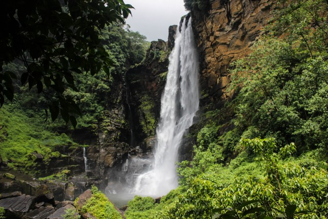
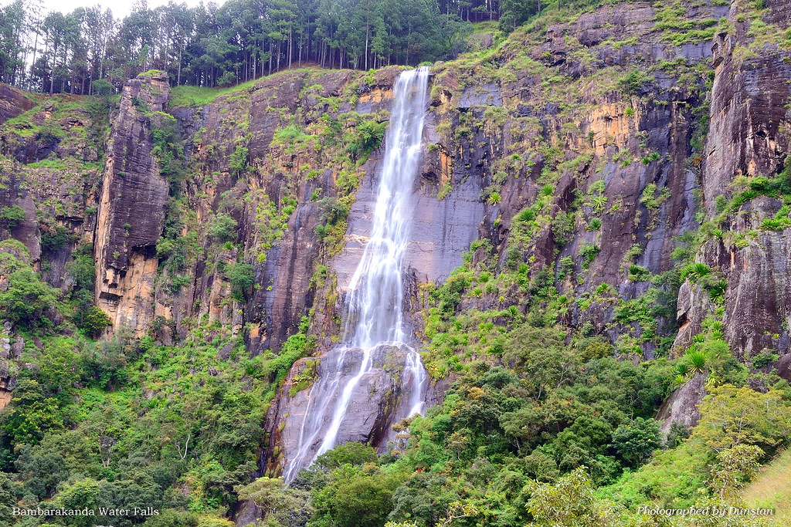

|
 Laxapana The name's derived from the words "Laksha-pahana", with "Laksha" denoting 100,000 and "Pahana" meaning lamps. Ergo, 100,000 lamps; which was apparently a reference to how the water diverted from here could be used to generate electricity to light up that many lamps. Moving away from history lessons and trivia, let's get back to the trip. We were waterfall-hopping one fine weekend, and Laxapana was one of the four or so we wanted to check out. Mostly because of its size, mostly because it's supposed to be hella photogenic, and mostly because well, it's a waterfall in the middle of the cooler climes in Sri Lanka. |
 Bambarakanda At 240m, the remote Bambarakanda Falls are the highest in Sri Lanka. March and April are the best months for viewing the falls, but any visit after heavy rainfall should be worthwhile. At other times, the water may be reduced to a disappointing trickle. The waterfalls are located off the A4 Hwy, between Belihul Oya and Haputale.The turn-off to the falls is Kalupahana Junction. From here, it’s 6km along a rough track, which many cars won't be able to manage. Waiting three-wheelers charge up a barely there track. For a return ride with an hour's wait, it's Rs 1000. |
 Dunhinda Dunhinda Falls, situated about 5 km from Badulla, the capital of Uva Province, are formed by the town's namegiving river, the Badulu Oya. The 64 m high waterfalls are got the name from the smoky spray surrounding the bassin, as “dun” in Sinhala means mist. An English name of Dunhinda Ella is Bridal Falls, as the shape of the waterfall resembles a bridal veil. The observation platform at the bassin of Dunhinda Falls can be reached via a scenic 1.5 km long jungle path. On the way, there is also a vantage point to the Kuda Dunhinda Ella, the “Small Dunhinda Falls” further downstream. Like many other waterfalls in Sri Lanka, Dunhinda Falls is threatened by a hydroelectricity project. |